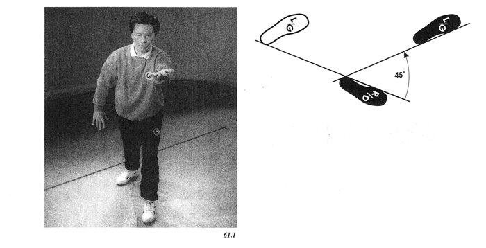

49 horse mane
wild horse parts maneлошадь гривa
дикая лошадь - разделить гриву

Part A: Shift your weight to the right foot, pivot the left foot on the heel to the right and shift your weight back to the left. Stand up and hold the ball, right arm (palm up) underneath the left arm (palm down). (Figure 58.1)
Part B: Step with the right foot at a 45 degree angle from the left foot, keeping the weight on the left foot. As you shift your weight forward and square your hips, extend your right arm in front of you palm up, and press down with your left arm by the left leg. (Figure 58.2)

Part A: Bring the left arm up underneath the right arm to hold the ball and stand up on the right leg.
Part B: Step with the left foot at a 45 degree angle from the right foot, keeping the weight on the right foot. As you shift your weight forward and square your hips, extend your left arm in front of you palm up, and press down with your right arm by the right leg. (Figure 59.1)

Part A: Bring the left ann up underneath the right ann to hold the ball and stand up on the right leg.
Part B: Step with the left foot at a 45 degree angle from the right foot, keeping the weight on the right foot. As you shift your weight forward and square your hips, extend your left arm in front of you palm up, and press down with your right arm by the right leg. (Figure 61.1)

Part A: Bring the right arm up underneath the left arm to hold the ball and stand up on the left leg.
Part B: Step with the right foot at a 45 degree angle from the left foot, keeping the weight on the left foot. As you shift your weight forward and square your hips, extend your right arm in front of you palm up, and press down with your left ann by the left leg. (Figure 62.1) 62.1